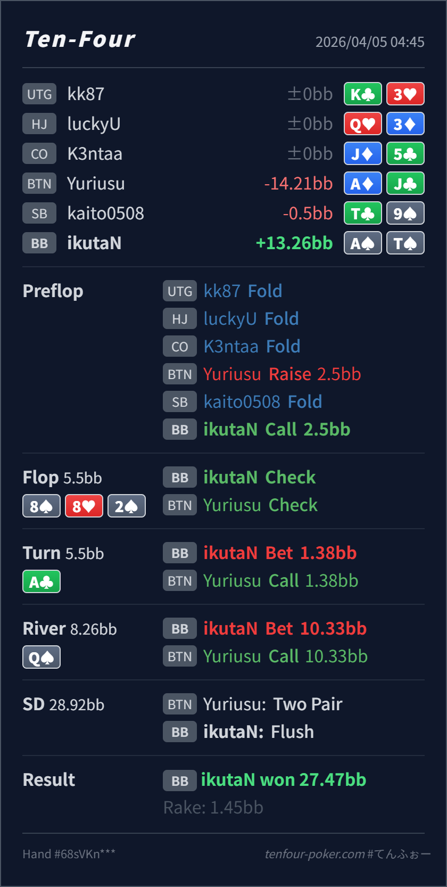

Preflop
良いAsTs は十分 defend できる hand で、ポストフロップも扱いやすいです。
主論点は、BB defend 後の Ac turn を「自分の hand が強くなったカード」と見るか、「IP range もかなり助かるカード」と見るかです。当時の思考メモはないので、「top pair + nut FD で取りにいきたくなった」という仮定で見ます。結論は、preflop defend、flop check、river の大サイズ value はかなり自然で、再レビューの焦点は turn の小さい probe です。
ikutaN BB AsTs8s 8h 2s / Ac / QsAc turn で top pair + nut FD になったから小さく取りにいきたくなった という仮定でレビューします。ikutaN BB AsTs2.5BB, BB call8s 8h 2s / Ac / Qs1.38BB into 5.5BB, BTN call10.33BB into 8.26BB, BTN call
良いAsTs は十分 defend できる hand で、ポストフロップも扱いやすいです。
8s 8h 2s良い
Hero は A-high + nut flush draw で、すでに悪くないショーダウンと改善余地を持っています。
Acやや微妙
Hero の hand は強化されましたが、BB range 全体が優位になるわけではありません。
Qs良いAsTs は paired board でもかなり上位の value hand です。
| 論点 | その場で置きがちな見立て | どこがズレたか | 次回の基準 |
|---|---|---|---|
turn の Ac | 自分が top pair + nut FD になったので、小さく広く打ちたくなる | flop check-back 後の BTN range には Ax や medium showdown hand がかなり残り、この Ac は IP 側を強めやすいカードです。hand は強くなっても、range まで同じように有利になるとは限りません。 | 自分の hand が嬉しいカード と 自分の range に有利なカード を分けて考える |
| river の大サイズ | paired flush board なので大きく打ちすぎると降ろしそうで怖い | AsTs は nut flush でかなり上位です。turn call 後の BTN に Ax や two pair が残るなら、river はしっかり大きく取ってよいです。 | river で自分が value 上位にいて、相手にも second best が残るなら大サイズを恐れすぎない |
| ストリート | その時点の見え方 | 判断の焦点 | 評価 | 推奨 |
|---|---|---|---|---|
| Preflop | BTN open は広く、BB は suited Ax や broadway を多く defend できます。 | AsTs は十分 defend できる hand で、ポストフロップも扱いやすいです。 | 良い | Call で問題ありません。 |
Flop 8s 8h 2s | BTN が check back したことで、高頻度 c-bet 群や露骨な air は少し減りますが trap は残ります。 | Hero は A-high + nut flush draw で、すでに悪くないショーダウンと改善余地を持っています。 | 良い | ここは check が自然です。 |
Turn Ac | BTN の check-back range には Ax、中位の showdown hand、slowplay がまだ十分残ります。 | Hero の hand は強化されましたが、BB range 全体が優位になるわけではありません。 | やや微妙 | GTO寄りには check がかなり有力です。打つなら小さく広くより、もう少し極化した設計の方が筋が通ります。 |
River Qs | turn call 後の BTN には多くの Ax、一部 8x、slowplay、spade が残ります。 | AsTs は paired board でもかなり上位の value hand です。 | 良い | 100-125%pot の大サイズは十分自然です。 |
自分の hand が強くなったから打つ だけでなく、このカードで誰の range が強くなるか まで見ると判断が安定します。Ac は Hero には嬉しい一方で、flop check-back 後の BTN range もかなり助けるカードです。Ax を降ろしにくいなら、今回の 125%pot は実戦でもかなり強いです。